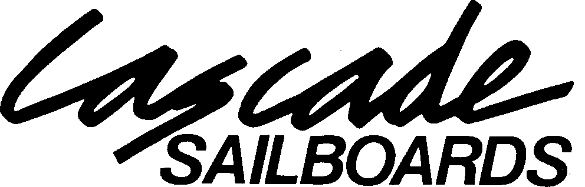

(back)
Cascade Sailboards are professionally hand crafted foam and fiberglass custom sailboards. Each board is custom built in the famous Columbia River Gorge which has been a testing ground for the Cascade Team since 1983. Cascade uses only the highest quality materials available and employs only the most qualified craftsmen the industry has to offer. Cascade owner/shaper Gary Swanson hand shapes each board to stock or custom specifications. His expertise as a board designer and shaper is a reflection of his 28 years surfing and 17 years windsurfing. Gary's manufacturing experience dates back to 1973 with over 3000 boards shaped since 1979. Cascade has established a solid reputation over the years for producing top quality surf and sailboards, quality in manufacturing as well as quality in design. Our aim at Cascade is to combine our expert craftsmanship with state of the art materials and time proven design all at the best possible price without a lot of hype and gimmicks. Our continued success and popularity is proof that our formula has been, and continues to be, right on track.
Cascade Sailboards produces two types of custom boards, the Cascade Gorge Classic Polyester and the Cascade Epoxy Hybrid. Both types can be produced in any designs ie. the Gorge Series, Wave Series, and the Slalom Series. Cascade uses only the finest materials available, 1st Quality Clark Foam, Silmar polyesters, West Systems epoxy, Hexel 'S' fiberglass, and Chinook boxes and inserts.
The Gorge Classic Polyester has been the cornerstone of Cascade's success since 1983. Known for their smooth, predictable feel the water the Classic Polyester is a high performance custom board that is durable, easy to repair, and affordable. The boards are hand shaped with double stringer 'classic' weight Clark Foam. Glassing is beefy and gorge-proven with a combination of 4+6 OZ.'S' glass. Bottom glassing has two layers full length with a jump patch. Top glassing includes 3 layers full length, an additional 3 layer deck patch is then glassed over Chinook boxes and inserts. Rails are double wrapped (4 layers total). Fin box is reinforced with oak woodies and carries a life time warrantee. Boards are constructed with a clear resin so color can be added to either or both sides of the board.
New for 1997, the Cascade Epoxy Hybrid brings together the best of both worlds. The strength and durability and custom shape associated with glass boards and the stiffness and lighter weight of epoxy boards. The board is built using Ultra-lite Clark Foam with a 1/4" sheet of high density Divinycell vacummed bagged to the bottom. The foam is then custom shaped. Glassing is completed using all 6 OZ. 'S' glass with a clear U.V. stabilized epoxy resin. The entire jibe area is reinforced with an additional unidirectional mat of fiberglass. The and result is a lighter, stiffer, and very durable custom board. The foam is closed-cell so it can't absorb water like E.P.S. foam. Boards can also be airbrushed. Average weights are about 3 LBS. lighter than its polyester counterpart.
Design- The Cascade Gorge Series is designed and shaped by Gary Swanson as a high performance gorge board. The board's beefy construction meets the gorge's demanding conditions head on, allowing for high jumps and hard turns without concern for the board falling apart.
The board incorporates several design concepts to achieve its performance level. 1.) Very shallow double concave at water entry to aid planning, smoothness, and directional stability. 2.) Tail 'V', tucked rails, and moderate wave rocker allows the board to redirect or 'roll' easily resulting in clean, smooth turns. 3.) Distinct edge allows for clean water release and bite in the turn. 4.) Available in round pin or square tail designs.
| 8'6"GORGE SERIES WIDTH- 20.75"- 21.25" TAIL- 12.25"-12.75" THICKNESS - 4." WEIGHT - 18.5 LBS. (poly) SAIL RANGE- 4.0 - 5.3 EST. VOLUME- 80 LITERS |
8'2" GORGE SERIES WIDTH- 20.25"- 20.50" TAIL- 12"- 12.5" THICKNESS- 4" WEIGHT - 17.5LBS.(poly) SAIL RANGE- 3.2- 4.5 EST. VOLUME- 70 LITERS |
| 7'11" GORGE SERIES WIDTH- 19.75"- 20.25" TAIL - 11 .S"- 12.25" THICKNESS- 3.75"- 4" WEIGHT- 16.5 LBS. (poly) SAIL RANGE- 3.0- 4.2 EST. VOLUME- 65 LITERS |
8'8"GORGE SERIES WIDTH- 21.25"- 21.75" TAIL- 12.25"- 13" THICKNESS - 4.25"- 4.75" WEIGHT- 19 LBS .(poly) SAIL RANGE- 4.2- 5.5 EST. VOLUME- 90 LITERS |
NOTE: Changes in design and outline can greatly alter a board's performance and volume characteristics ie. speed, planning, 'turnyness', jumping ability etc. Cascade welcomes customer feedback to help suit individual needs. Custom graphics are also encouraged.
Warrantee: Fin box and mast box are unconditionally guaranteed for any sailing related failure. All other materials and workmanship are also guaranteed.
The Cascade Wave Series is designed for the sailor who requires a high performance wave board for use in ocean surf or large swell bump and jump conditions, any place where a smooth, tight turning or snappy board is desired. The Wave Series incorporates several design concepts to achieve its top performance level. 1.)A flat to 'V' bottom with soft tucked under rails forward allows the board a maximum amount roll or looseness for quick tight arcing turns. 2.) Hard edge and low rails in the tail help the board track deeper and bite hard in the turn. 3.) The wide point is pulled slightly back from center, mast track and foot strap are also positioned slightly back, the outline is widened in the tail and narrowed in the nose, overall thickness profile is also shifted back. The result of the 'back' movement in these shaping points tightens the pivot or swing weight of the board increasing the snap in the turn while at the same time decreasing the turn radius. 4.) Increase in nose rocker Keeps the nose from pearling or digging in when sailing out through white water, or during off the lip or re-entry maneuvers.
| 8'3" WAVE SERIES WIDTH-20.75"-21.25" TAIL- 12.5"- 13" THICKNESS- 4" WEIGHT- 17.5 LBS.(POLY) SAIL RANGE- 3.7-5.0 EST. VOL.- 75 LTS. |
8'6" WAVE SERIES WIDTH- 21.25"-21.75" TAIL- 12.75"-13.25" THICKNESS-4"- 4.25" WEIGHT- 18.5 LBS.(POLY) SAIL RANGE- 4.2-5.7 EST. VOL. - 85 LTS. |
NOTE: Changes in design and outline can greatly alter a boards performance and volume characteristics. Cascade welcomes customer feedback to help suit individual needs. Custom graphics are also encouraged
Design - The Cascade Slalom Series is designed and shaped by Gary Swanson as a fast, smooth, early planning flat-water slalom board. The board is similar in design to the Gorge Series but carries more volume, is a bit quicker to plane, and has excellent top end speed. Turning is a bit stiffer and longer arced which is to be expected in any slalom design, The Slalom Series incorporates several design concepts to achieve its maximum performance. 1.) Shallow single to double concave for early planning, smoothness and directional stability. 2.) Moderate Tail 'v' and semi-tucked rails allows the board to redirect or roll, resulting in clean, positive turns. 3.) Flatter tail rocker to aid early planning and top end speed. 4.) Hard edge allows for clean water release and bite in the turn.
| 8'8"+8'10" SLALOM SERIES WIDTH- 21.5" - 22" TAIL - 12.25" - 13" THICKNESS- 4.5"- 5" WEIGHT- 21 LBS.( poly ) SAIL RANGE- 4.7 - 6.0 EST. VOLUME- 100 LITERS |
9'0" SLALOM SERIES WIDTH- 21.75"- 22.25" TAIL - 12.5"- 13.25" THICKNESS- 4.75"- 5" WEIGHT- 22 LBS.(poly) SAIL RANGE- 5.0 - 6.5 EST. VOLUME- 105 LITERS |
Note: Changes in design and outline can greatly alter a board's performance and volume characteristics. Cascade welcomes customer feedback to help suit individual needs. Custom graphics are also encouraged.
| Cascade Classic Gorge Polyester | $ 775.00 |
| Cascade Epoxy Hybrid | $ 975.00 |
| (Both board types available in Gorge Series, Wave Series, and Slalom Series.) | |
| Custom Airspray | $ 25.00 and up |
| Footstraps: Dakine Pro Form | $ 12.50 |
| Visual Speed | $ 12.50 |
| Fins by Rainbow (Poly + G-10) | $ 50.00 - $80.00 |
| CASCADE "T"- Shirts | $ 14.00 |
| Gorge Jump padz | $ 36.00 |
| Padded board bags by DaKine | $ 140.00 - $160.00 |
| Special Package Price: Gorge Classic Polyester | $ 995.00 |
| Epoxy Hybrid | $ 1195.00 |
(Package includes basic color, footstraps, pads, fin, padded board bag and t-shirt.)
* All orders 20% down to start. Balance on delivery * Freight F0B Mosier, OR Plus $ 25.00 each board packing
| Factory Showroom location: 704 Scenic Hwy, Mosier, OR. (5 miles East of Hood River). 541/478-3441 |
Mailing Address: P,O, Box 1004 Hood River, 0R 97031 |